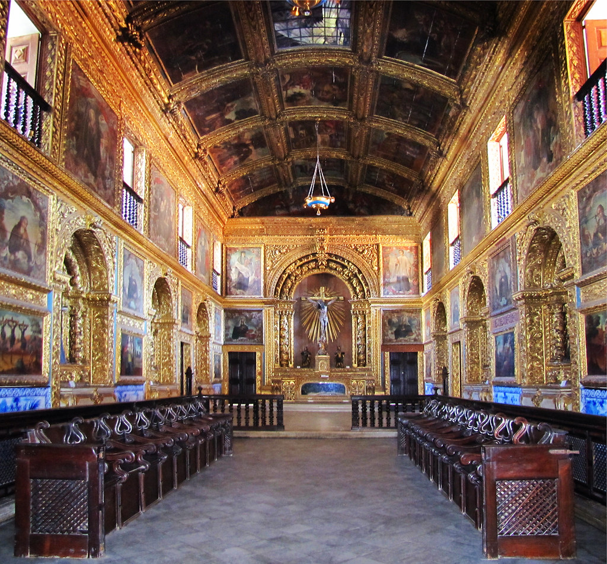
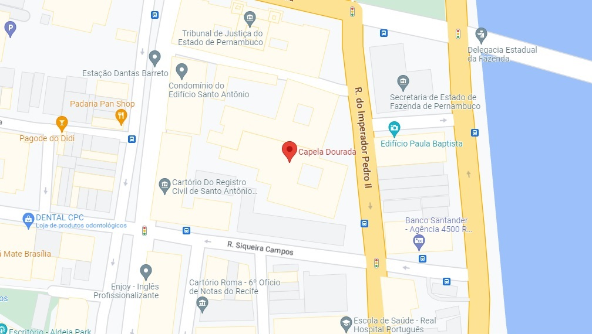

A Capela dos Noviços da Ordem Terceira de São Francisco de Assis ou Capela Dourada é uma capela da Ordem Franciscana localizada na cidade do Recife, capital do estado brasileiro de Pernambuco.
Com construção iniciada em 1696, foi o primeiro templo do Brasil a ser integralmente coberto de decoração barroca.
Está situada dentro do complexo de edifícios do Convento e Igreja de Santo Antônio, que inclui a Igreja da Ordem Terceira de São Francisco e o Museu Franciscano de Arte Sacra.